How does a person become the kind of person who is ready when history unexpectedly calls?
Samarth Bansal · August 3, 2026
On July 20, while tens of thousands marched from Jantar Mantar to Parliament in one of the largest student protests of the Modi years, I was texting friends about how much I enjoyed The Invite, which was so funny and frank about adult desire, and drafting writing rituals to improve the cadence of my sentences.
It was a Monday morning I'd cleared to let my mind breathe after a deeply immersive week. It was packed with the non-glamorous work of startup leadership: reviewing the collective quarterly outcome of my 25-member team, conducting growth chats with half of them, and editing an article about why a simple four-ingredient ice cream now contains twenty.
The kranti of the protestors didn't breach my life of selective attention.
Partly because it was staged on Instagram, and I don't have Instagram. (I'd deleted my account in 2024.)
But mostly, it was a numbness induced by déjà vu. I didn't want to watch a movie I'd seen before: the citizens will protest peacefully; the police will disperse tear gas; the independent channels will show shaky phone videos of a struggling, wounded student; the establishment channels will show one broken barricade as evidence of "chaos"; the right will call it a politically funded toolkit to defame the nation; the left will remind you Modi doesn't appear for a press conference. Everyone will recycle the same set of outrage rituals. It will loop and loop and loop, until the public moves on. And nothing will happen.
It's exactly at this point that one can wonder if a life designed around the recognition of our limited capacity to care is irresponsible citizenship induced by privilege. But I didn't really wrestle with that macro-dilemma. Instead, I faced a personal moral dilemma — the dilemma of friendship.
Because while I was busy protecting my sanity, my friend had spent more than a month at Jantar Mantar, leading from the frontline. My friend, Ashutosh Ranka, the national spokesperson of Cockroach Janta Party.
Ranka is two years my junior from IIT Kanpur, and one among the few who shared the mutual struggle of building a career in public life.
I chose journalism because my stint as Editor-in-Chief of the campus newspaper made me realise the power of a story; he chose politics because his time as President of the Students' Gymkhana showed him how power can shape a community.
Public affairs has been the glue of our friendship. (It didn't have the intimacy built on exchanging voice notes around awkward dating adventures.)
We first worked together in 2019 (both of us had graduated by then) for pushing back against a decline in student freedom on the IIT campus: we reported and co-wrote an article for the student publication and then mobilised alumni support to push authorities to act.
And hence, looking away from Delhi felt like betrayal. But the world didn't allow me. The country broke through my wall.
"Insta is on fire," Younger Sister texted me. "The police just took him away, look online."
At the gym, resting after the third crushing set of landmine rows, my trainer started in on kya chal raha hai desh me.
On my way to watch The Odyssey, when I asked the auto bhaiya, "BKC me meter se kyu nahi chalte?", he answered with a reason I didn't fully follow, but it found its way, as everything now did, to the same place: everything-is-fucked-in-this-country, where no one cares about everyday injustices. "Aap dekh rahe ho na police walon ne bachchon ko kaise peeta?"
I had had enough. So on Thursday, when my team at office wanted to chat about the protest, I let my guard down and got my podcast-bro energy out to explain the anatomy of dissent. I stopped trying to look away and went down the rabbit hole to look at what was going on, and felt so eff-ing proud of everyone on the street — and Ranka.
So on Saturday, when the "DHARMENDRA PRADHAN HAS RESIGNED" tweet flashed, it felt like tuning into an (imaginary) early 2000s India-Australia match in the middle of the 49th over, where we needed 13 runs to win and one wicket to go, and Yuvraj Singh pulled off two sixes over Glenn McGrath to claim the title. David beats Goliath, but my joy as a spectator didn't diminish just because I missed the innings. If anything, it only got boosted because your friend was in the playing eleven.
Un-fucking-believable. Put yourself in my shoes: how would it feel when the guy you were dancing with on Chunari Chunari at a mutual friend's sangeet just seven months ago, suddenly becomes the face of a movement that forced a Union Cabinet Minister to resign under sustained political pressure, the first-time ever for Mr Modi's government? I can't even.
"What are such people made of I wonder," another friend asked when I told him about Ranka.
I am writing this essay to attempt an answer to that question.
The story doing the rounds is that Ranka left a high-paying McKinsey job, and he sacrificed money for public life. Sorry, I have never bought that story.
This story assumes the primary factor shaping elite college graduates is salary. For many, it is. But is that the case for everyone? Absolutely not.
For many with an IIT degree and caste-class privilege, the real battle is rarely financial. The bigger battle is psychological. Over decades, the world has decided the script for what a "good" IIT graduate should do. A new version, with some modification, appears every decade. And the hard part is rejecting the script.
Listen to Ranka. "I realized that I was in McKinsey not because I wanted to do consulting, but because everyone on campus said that it is the best thing to do after IIT," he told Vox Populi, the student newspaper in 2019.
"So quitting was a huge mental barrier, to give it all up. But then I ultimately realized that it was just a 'mental' barrier. … Overcoming the mental barrier was a lot about coming to peace with myself."
Ranka is one of the many I know who crossed that barrier. What differentiated him was his anchor: his drive to contribute through politics.
For as long as I have known him, he seemed to have been convinced that politics was his route for bringing change. Bureaucracy? Not for him. A McKinsey project with UP government made him believe that bureaucrats ultimately execute what elected governments decide. NGOs? Not his pace. What can take them years, an elected government can sign off in months.
But clarity is not enough if you don't see a path. And there he shared the angst of many young Indians: how do you make a "career" in politics? Where do you start?
Ranka navigated this uncertainty by doing. He jumped in and started volunteering for the Aam Aadmi Party in 2019. And as this transition happened, where he'd direct his energy to civic life, he was also discovering where he could move things in his private capacity.
So during COVID, he raised more than Rs 2 crores (along with half a dozen IIT Kanpur alumni) to help: in 2020, to arrange buses for migrant workers returning home; in 2021, to procure oxygen concentrators for government hospitals struggling with supply constraints.
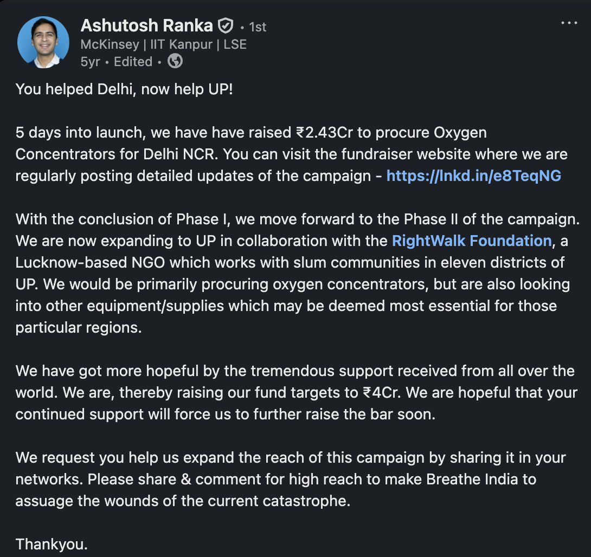
The doing revealed more learning was needed. That took him to the London School of Economics to study policy.
And unlike IIT, where he often skipped classes because he had gone to study engineering without really wanting to be an engineer, he wanted to be in these classrooms. He was trying to add academic rigour to instincts that had until then been shaped mostly by experience.
I remember him asking me for book recommendations, and I shamelessly plugged books by journalist friends: Despite the State by M. Rajshekhar, The Silent Coup by Josy Joseph, The New BJP by Nalin Mehta, and so on.
What he missed the most abroad were like-minded people who understood his aspirations.
"I have been dying to discuss results with people," he messaged me after Uttar Pradesh 2022. "Indians here don't give a fuck," are not his exact words, but this is his exact feeling.
He wanted to discuss Indian issues; his friends discussed how a British passport would shorten the queue at Heathrow airport. He would tell them he planned to return to India in two years; they would recommend signing a three-year rental contract. He would tell them he wanted to join politics; they would tell him he wouldn't be able to.
In a long message in 2022, he wrote to me:
"Yeh pata hone ke bawajood ki maine 3 saal pehle paison ko laat maarkar politics join ki thi aur loan chukane ke baad wapas yahi karunga, unhe lagta hai ki itne paise chhodkar main wapas nahi ja paunga. Aur chala bhi gaya toh politics nahi kar paunga."
Back in India, as Ranka's social media posts became entrenched in politics, I remember at least one mutual friend, saying this with that slightly smug judgement: "Ranka needs to chill, bro."
Ranka probably didn't know this. And I doubt he would have cared. He carried on. But the physical distance from India often induced guilt.
When someone standing up to the establishment was arrested and he learnt about their deteriorating health in jail, he texted me:
"I just keep wondering. Mere jaise log bhi 3-4 din gussa karke aagey badh jaate hai. Uski family pe kya beet rahi hogi yr."
Another time, when I told him that I dealt with my own frustration by reminding myself why the journalism I do matters, he replied:
"At least you have this. Mere jaise toh idhar baith kr bs dekh rahe hai, gariya rahe hai, sad ho rahr hai aur kuch nahi kr pa rahe."
And after watching While We Watched, the documentary following journalist Ravish Kumar, he messaged:
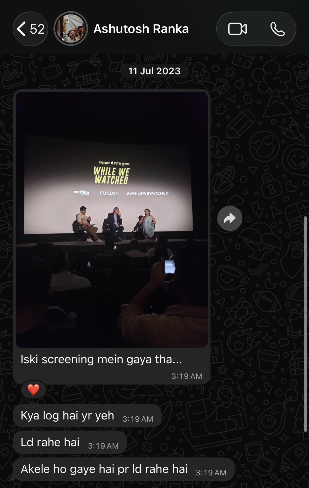
After LSE, Ranka again joined McKinsey in London: partly to clear off his student loan, partly to save money for his return and the uncertain future.
In the second half of 2023, when Ranka properly started planning his own Odysseus return, I remember having at least two long conversations. I'd share whatever I had learnt from building a career as an independent freelance journalist: find a part-time gig that pays your bills, and leaves you with enough time and bandwidth to focus on what you really want to do. That may or may not work in his context, but the meta point being: once he decides to take the plunge, he will figure it out.
So imagine my joy when this message landed in my inbox:
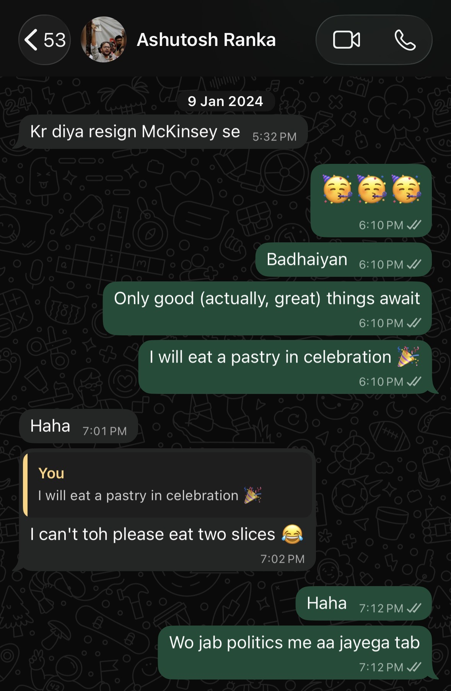
Ranka was back in April 2024.
We met. I took him for lunch at Potbelly, and of course, coffee at Quick Brown Fox in Hauz Khas.
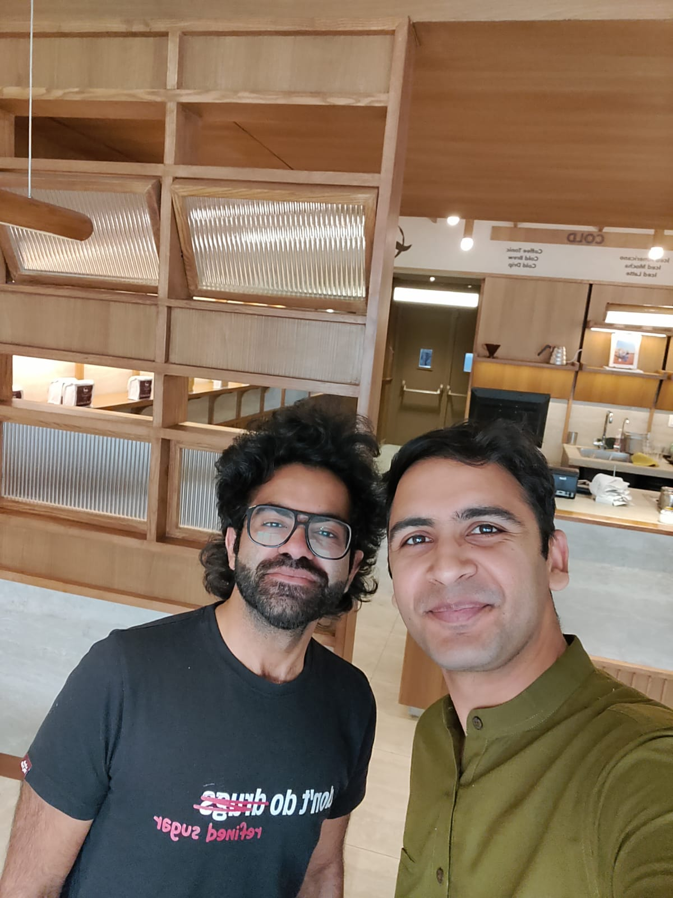
By sheer coincidence, his return coincided with a turning point in my own journey. Exactly at the time Ranka was putting his foot down in politics, I decided to move to Mumbai to join forces with Shashank Mehta to build The Whole Truth Foods, in our attempt to bring back honesty to food.
I disappeared inside that world, and started obsessing over organisational design, brand transparency, and building trust in an industry which has fed us lies for decades. Instead of decoding caste arithmetic in the Bihar election, I started decoding why the protein test doesn't really test for protein (and the many strategies to game it), why antibiotic-free eggs may still contain antibiotics (and why no one is really checking), and the highly underrated emotional labour of management.
Which is why, when Ranka and I met again at that Chunari Chunari wedding in December 2025, I realised how much of his story I had missed. And so, between long walks in the buffet ground and stolen moments away from friend-group chats, he gave me the highlight reel of the previous year.
This included his work with the Aam Aadmi Party — he appeared as their National Spokesperson on TV — and more interestingly, his on-ground activism in Rajasthan.
And it's then that I learnt that long before Ranka became one of the faces of a national movement around the NEET paper leak, he had already been organising around education. And he had made vyavastha parivartan his mission through Parivartan, a citizen-collective he founded in Rajasthan.
Before Pradhan, it was Dilawar.
In November 2025, nine-year-old Amaira Meena, a Class 4 student at Jaipur's Neerja Modi School, died by suicide. Her parents alleged the school was at fault: she had been bullied and her complaints were ignored.
But, no sunwai. So Parivartan threw its weight behind the family's fight, and started the 'Justice for Amaira' movement. They organised a candle march at Rajasthan University and kept demanding accountability from the school. (A CBSE inquiry later found the school at fault, and its affiliation was cancelled.)
Ranka's team refused to treat Amaira as an isolated tragedy. They argued it was part of a broader pattern of failure in Rajasthan's education system: seven children were killed when the roof of a government school in Jhalawar collapsed, even as government records showed thousands of unsafe school buildings remained; teacher vacancies kept rising; promised textbooks had still not reached many government schools half way into the academic year.
Now one can always argue that "that's just how the system is". But that's exactly the excuse Ranka's Parivartan was fighting against. To say that no, this is not acceptable. To say that if this is a recurring pattern, then it's not the fault of one negligent teacher, or one corrupt bureaucrat, or one badly drafted policy. The root cause lies with the elected leadership — and they must own them, and we should hold them accountable.
So they plastered Jaipur with posters declaring "Laapata Shiksha Mantri" to highlight the absence of Madan Dilawar, the state education minister: where is he when the education system is visibly failing?
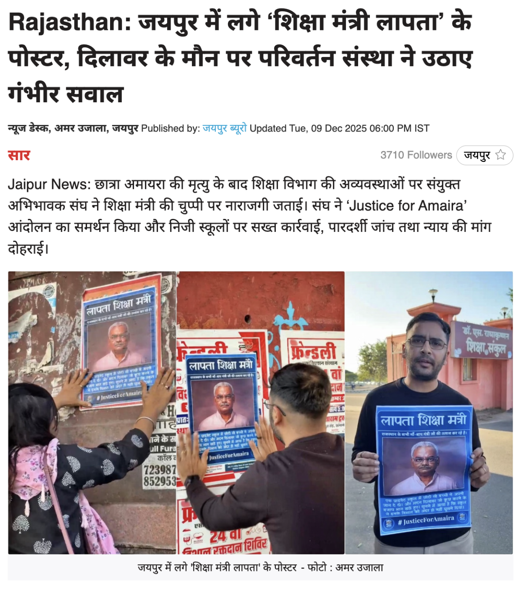
What Ranka was doing here was simply connecting everyday failures not to a faceless "system" but to an office-holder with a face.
At this point, note that Ranka didn't have the half million followers he now has on Instagram. None of the Parivartan videos of Amaira's campaign crossed 100k+ views. But they continued. And the online campaigns were almost always accompanied by on-ground activism.
Earlier that summer, in 2025, he had become one of the principal organisers of the campaign to save Dol Ka Badh, a hundred-acre urban forest in Jaipur which was threatened by a mall and hotels, and was detained by the police when protesters tried to stop the clearing.
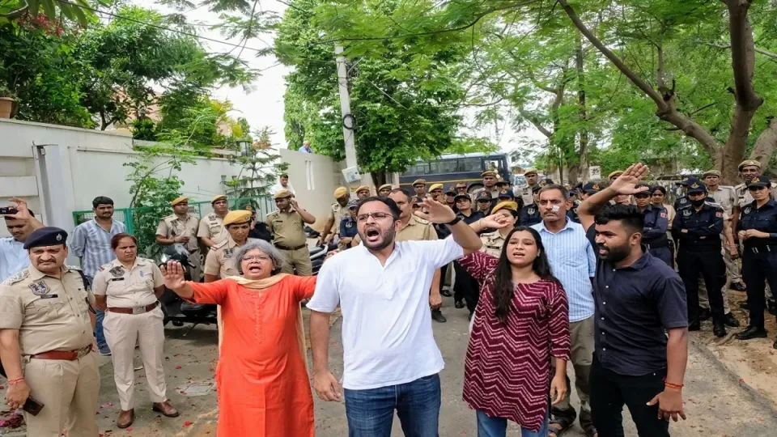
Between December 2025 and April 2026, Parivartan demanded accountability for the deaths of multiple children following the state's cough syrup scandal, and continued to highlight student issues at Rajasthan University.
And the next campaign Ranka took on was the crisis in Indian examinations.
In mid-May, Parivartan released an original data-backed report on the scale of exam fraud in India. Over the previous twenty years, it documented more than 200 cases of examination fraud affecting an estimated 10 crore candidates. Since 2015, nearly 70% of those cases involved paper leaks. (I found this fascinating because I had simply never thought about this issue. JEE was the only competitive exam I ever appeared for, and paper leaks weren't part of my world.)
In the Instagram video where Ranka explained the findings, which eventually crossed eight lakh views, this comment stood out to me:
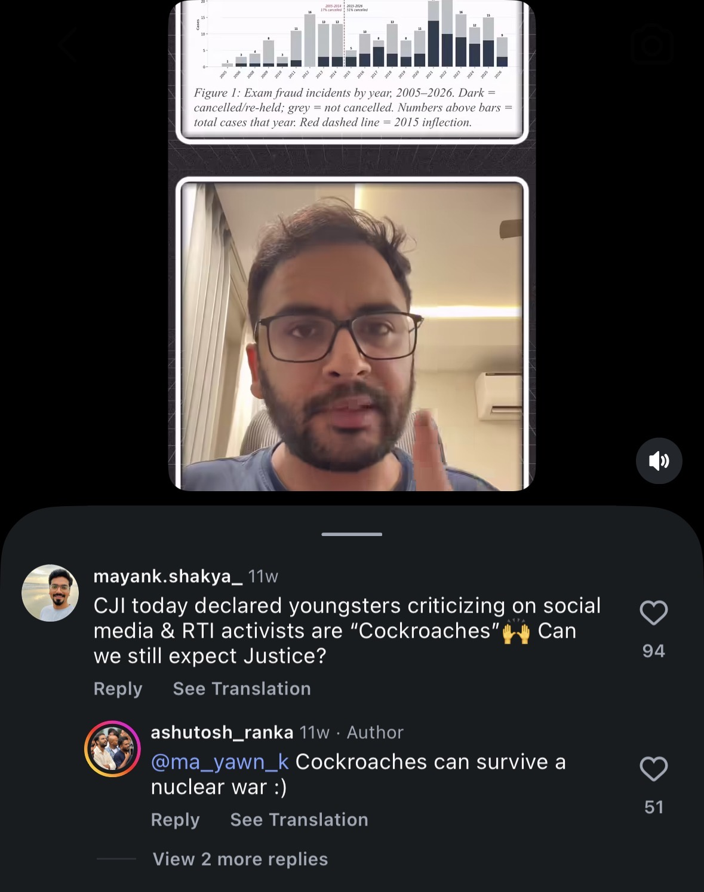
Yes, this was 15 May, the exact day Chief Justice Surya Kant made the now-infamous cockroach remark.
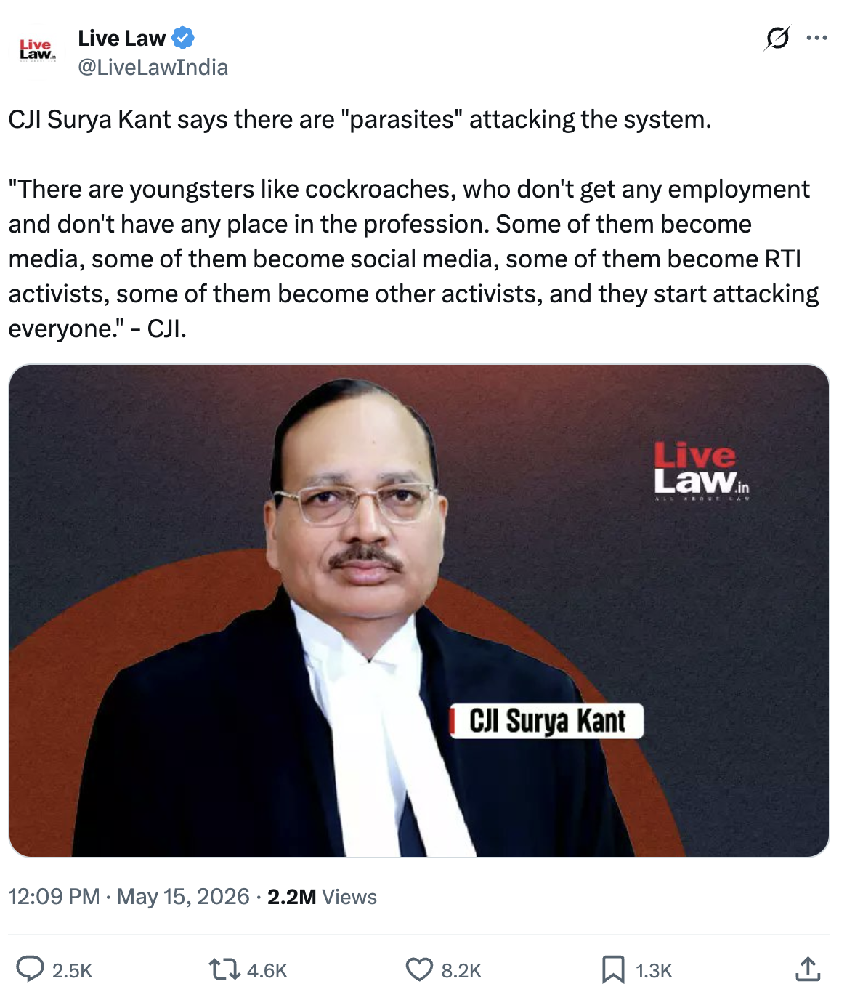
A few days later, on 27 May, Ranka and I caught up over the phone. (One of those perfectly timed adult conversations that happen because both of you are waiting to board flights at different airports.)
He filled me in on what he was seeing on the ground: the anger among students, the anger among Gen Z. I remember feeling slightly embarrassed when he asked, "Aapko kya lagta hai, Samarth?" and I wanted to tell him (though I didn't) that I no longer had a feel for the political pulse. I had disappeared so completely into the world of food that I simply hadn't been paying attention.
And it was during this same call that he casually mentioned: "AD is my friend."
"Kaun AD?" I asked.
"Abhijeet Dipke. Cockroach Janta Party."
Younger Sister discovered Cockroach Janta Party through a LinkedIn post. She is twenty-five. When the protests began in Delhi, she wanted to go, but she couldn't find anyone to go with.
"A part of me felt ashamed for not standing up for what I believed in," she wrote on her Instagram story. "So I decided to post about it, to educate people around me. Then gradually more people did too. Still, a part of me felt disturbed and hopeless. That eh, nothing can really happen.."
When she returned to Delhi after a vacation in mid-July, a friend actively advised her to stay away:
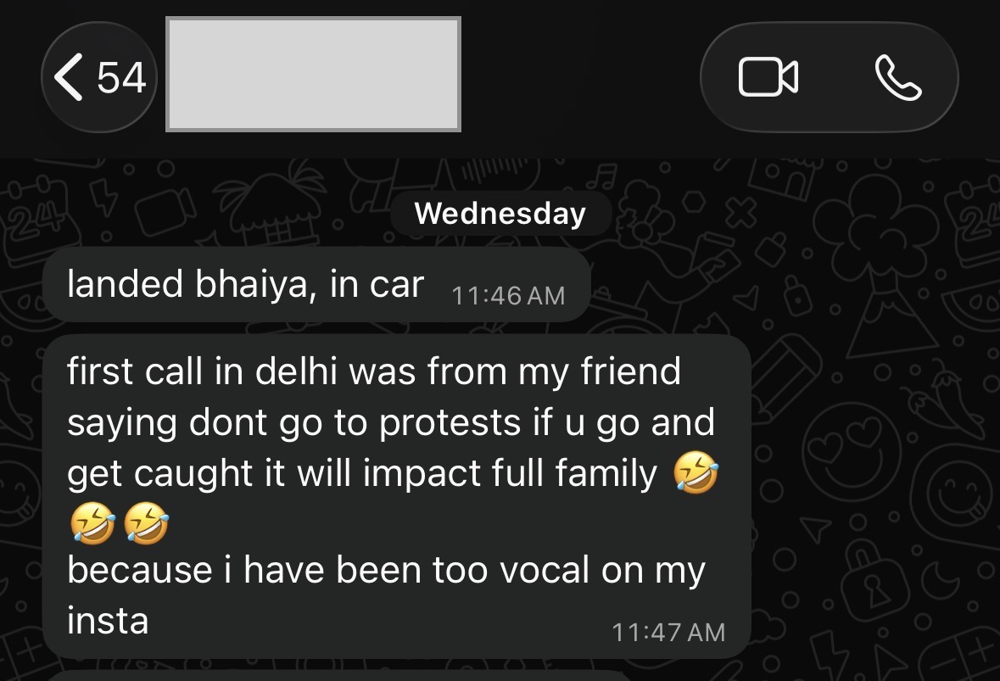
My mother, predictably, called me. "She wants to go to Jantar Mantar," she said anxiously.
I almost never know what exactly mom wants from me in these moments. Does she want me to convince my sister not to go? (She knows I won't.) Or does she simply want reassurance that it'll all be okay?
I decided — as I increasingly do these days, in my own little project of establishing adult boundaries — that this was a mom-daughter thing to figure out.
"Jaane do," I said. "Aur aap relax karo."
Younger Sister went. That evening, she sent photographs from the protest site, writing later:
"After a long while, I decided to visit the protest site. It made me believe in India and the people I am surrounded by. It felt good. A ray of hope."
And then, Pradhan resigns.
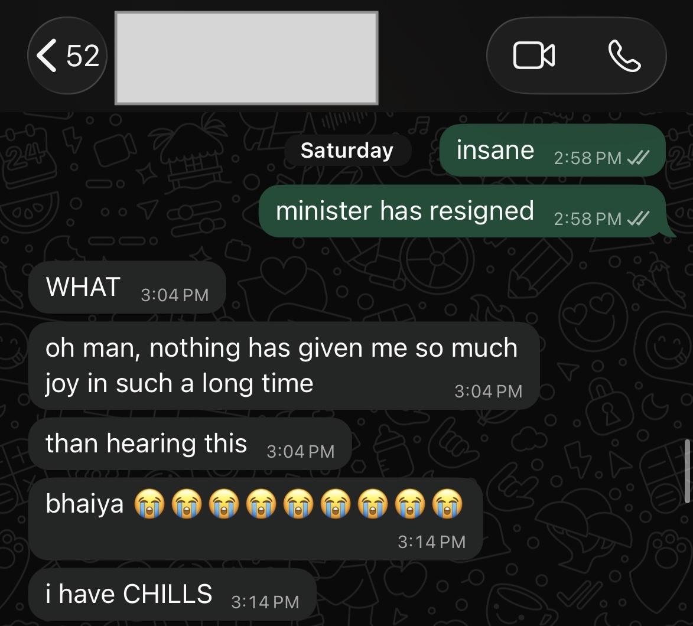
"We were tired of being shit on in the corporate world," Younger Sister wrote. "CJP has really empowered an entire generation who themselves started thinking they are useless."
And this, for me, is the greatest victory of this protest: it made people believe. It has reset the expectations for young people on what is politically possible.
It reminded me of Ursula Le Guin's The Dispossessed, the July pick at Friction, the book club I started in Mumbai. What stayed with me from her "ambiguous utopia" was the power of imagining alternatives, howsoever imperfect they might be.
Le Guin makes us live inside an anarchist world that emerged from the angst against capitalism, but she doesn't romanticise it: she shows how the revolution eventually calcifies, and the new inherits some of what frustrated you about the old — it just takes a different form.
I don't know what Ranka and CJP will do next. They will confront massive challenges. They will make blunders and they will be scrutinised for the minutest slips. And almost as a natural law of politics, their biggest supporters will turn detractors.
But Le Guin's realism isn't cynicism. She is not suggesting inevitability; it is more like a warning to hold on to what you value. And in the process, she reveals that one of the greatest acts of political change is imagination itself. And the path to get there requires crossing a wall many thought was a permanent boundary, until someone decided to walk through it.
The CJP-led protest walked through that wall — the wall of inevitability that even left me with the "nothing will happen" feeling. The wall now stands with a hole, and the hole was created by people like us. Because Ranka is one of us.
But the big wins shouldn't hide the little ones. And so, before the public scrutiny hardens and the barometer of a "win" changes completely, as a friend, and as the unofficial spokesperson of my own CJP i.e. Choti Jeet Party, I want to log the moments of validation (as I saw it from a distance) from the idols that shaped him.
In 2023, Ranka was dying just to get a chance to meet Ravish Kumar. Cut to now, and Ravish is posting videos featuring Ranka.
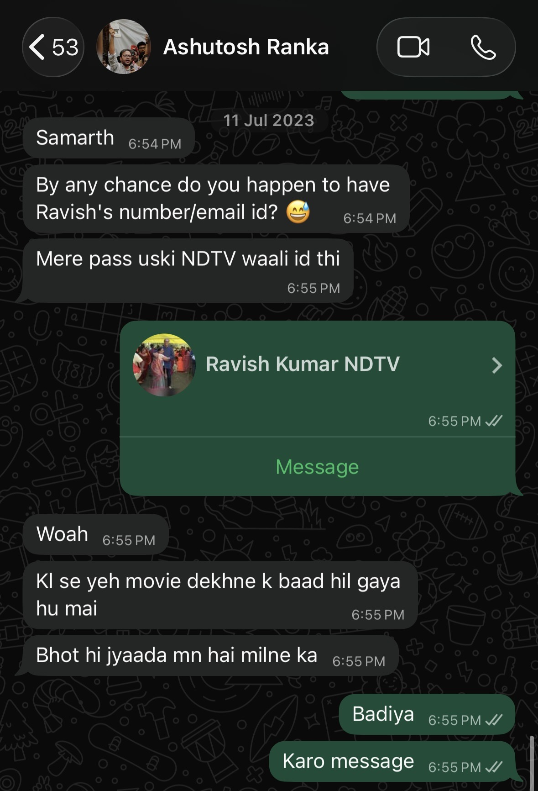
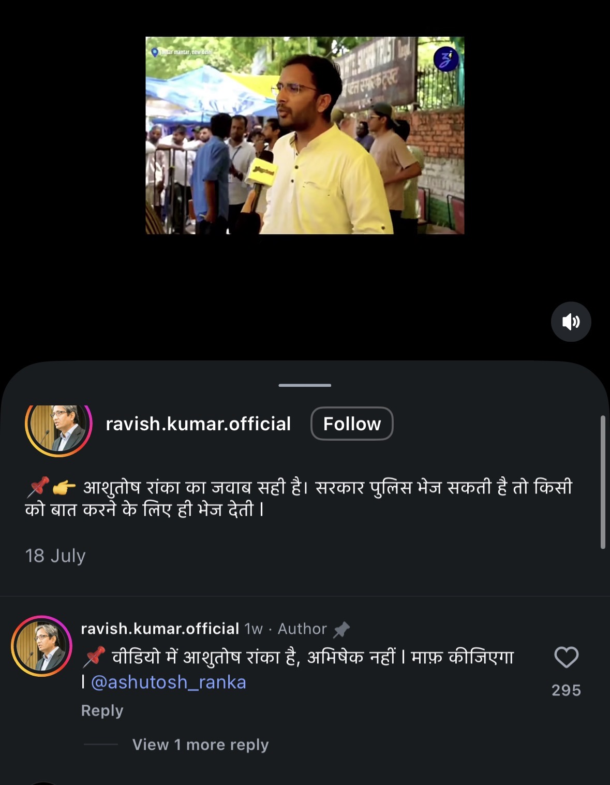
He had told me it was Rang De Basanti that inspired him to work for the country. So imagine how it felt watching Atul Kulkarni take the stage at Jantar Mantar.
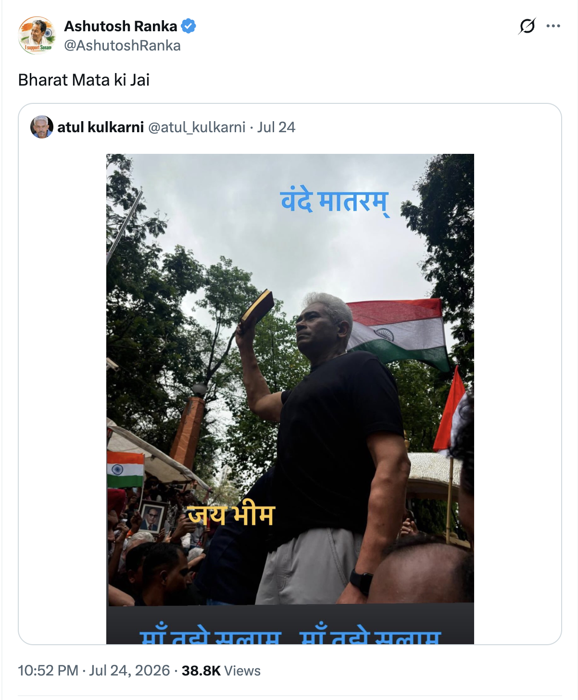
And despite the internet's desperate attempts to "expose" Ranka's connections with the Aam Aadmi Party, there is absolutely nothing hidden about it. Ranka has been publicly vocal about his inspiration from Arvind Kejriwal, and that reality can co-exist with whatever happens in his political future. CJP had nothing to do with AAP, but seeing Kejriwal take the stage for a movement Ranka helped shape felt like how a young Virat Kohli might have felt playing alongside Sachin Tendulkar.
Later, when I was telling Younger Sister about Ranka, she asked why he left everything for Indian politics at a time when hope was in the negative.
"I want to know where he got his hope from."
"Fuck yaar. This video has broken me," I texted Ranka on 23rd August 2023.
"UP school one?" he asked.
"Haan yaar!"
I was referring to the video from a private school in Muzaffarnagar which showed a young Muslim boy standing like a statue while his classmates were instructed to slap him one after another for failing to recite his multiplication tables. And as they did, the teacher made communal remarks to encourage them to hit harder.
The innocence of that helpless kid made me feel a despair that the diagnostic language of "institutional failure" and "electoral autocracy" and "democratic backsliding" never could.
And it wasn't just that: a succession of heartbreaking events had broken my stoicism.
In the same month, Lallantop had posted a video of a vegetable vendor breaking down in tears at Delhi's Azadpur Mandi because rising tomato prices had made it impossible for him to buy in the morning and sell later that day.
Then there was the news that an Indian Railways constable had shot dead his senior colleague and three passengers on the Jaipur-Mumbai Express. A video later surfaced of him saying: "If you want to live and vote in Hindustan, it is only Modi and Yogi, these are the only two names". This is a sentence you can explain away however you want, but one I saw as an act of normalised everyday terrorism.
In that conversation, I told him about my own principle of holding on to hope despite everything that was happening. But what stayed with me was the sheer force of Ranka's determination.
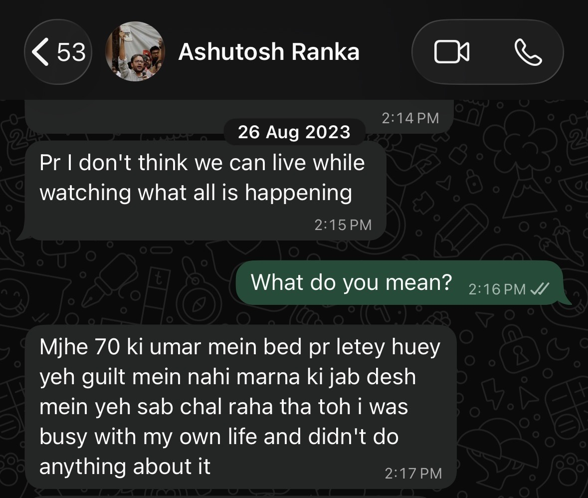
And then there are these words he sent, which I have returned to repeatedly over the past week.
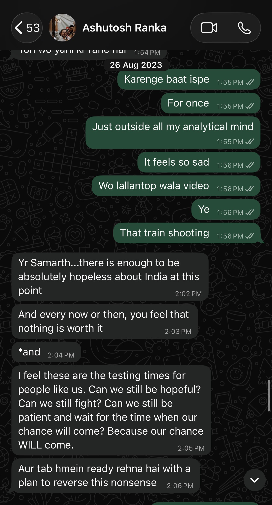
Ranka was getting ready for this moment all this while. And there is actually no grandiosity hidden here. All the myth-making stories of changemakers fall apart when you realise that people who change the world aren't made of anything different than the rest of us. They are simply the ones who refuse to look away, jump in the arena and stay in the game.
And when they get their chance, those of us who know them, look back, and feel: Oh, so this is what it takes! So what's stopping you?
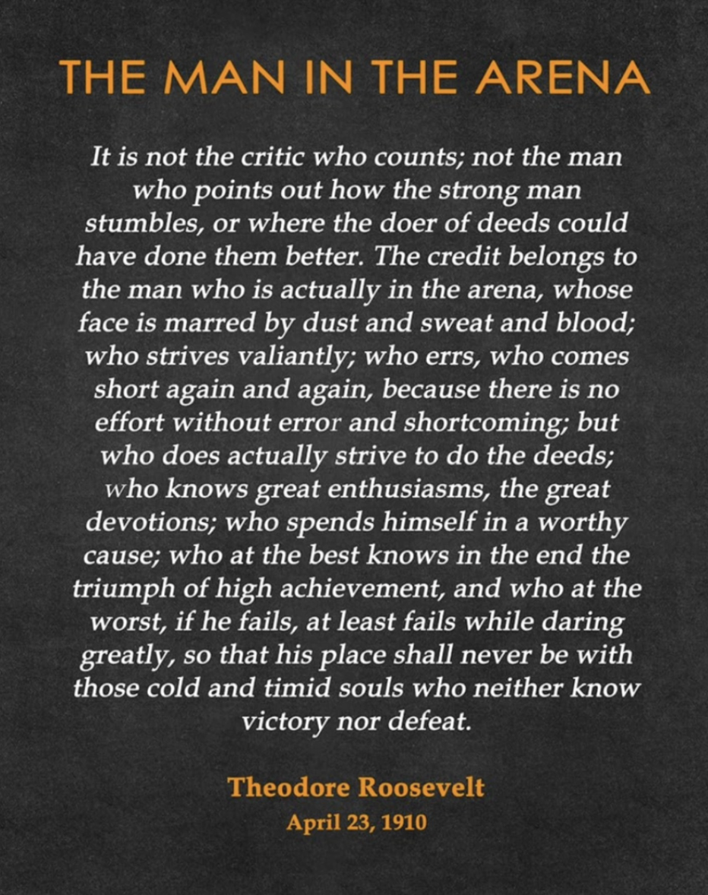